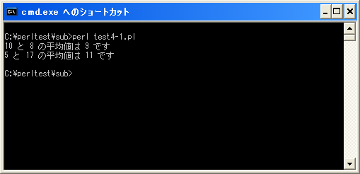

引数
サブルーチンを利用することで、同じような処理を1箇所にまとめることが出来ます。ここではさらに進んでサブルーチンに引数を渡す方法を確認します。
例えば次の例で考えてみます。
my $ave; $ave = (10 + 8) / 2; print "10 と 8 の平均値は $ave です¥n"; $ave = (5 + 17) / 2; print "5 と 17 の平均値は $ave です¥n";
2つ数字の平均値を計算して表示しています。このサンプルの平均の計算と画面の出力部分をサブルーチンにしてみます。サブルーチンは共通して使用されるものですのでサブルーチンの中に数字を直接記述することはできません。その為、サブルーチン内では変数を使って計算式を記述しておき、サブルーチンが呼び出される度に変数に数値を格納します。
ここで使用されるのが引数です。引数とはサブルーチンを呼び出す時に、複数の値を渡す時に使用します。引数付きでサブルーチンを呼び出すには次の書式を使います。
&サブルーチン名(引数1, 引数2, ...);
sub サブルーチン名{
実行する処理;
}
引数は1つだけではなく複数の値を指定することが出来ます。引数を付けてサブルーチンを呼び出す時は、サブルーチン名の後に括弧()を付け、括弧の中に引数を記述します。複数の引数を記述したい場合はカンマ(,)で区切って続けて記述して下さい。
次にサブルーチン側では渡されてきた値が自動的に配列変数「$_」に格納されます。よってサブルーチン内で渡されてきた引数を使用したい場合には、1番目の引数は「$_[0]」で参照できますし、2番目の引数は「$_[1]」で参照できます。
サブルーチンに渡されてきた引数が格納される配列変数 $_ 1番目の引数を参照する場合は $_[0] 2番目の引数を参照する場合は $_[1] ... n番目の引数を参照する場合は $_[n-1]
では先ほどのサンプルをサブルーチンを使って書き換えてみます。サブルーチンを呼び出す時に、平均を計算したい2つの値を引数としてサブルーチンに渡し、サブルーチン側では渡されてきた引数の値を取り出して平均を計算し表示します。
&calcAverage(10, 8);
&calcAverage(5, 17);
sub calcAverage{
my $ave;
$ave = ($_[0] + $_[1]) / 2;
print "$_[0] と $_[1] の平均値は $ave です¥n";
}
今回はサブルーチン「calcAverage」を定義し、2つの引数の平均を計算して画面に出力するようにしています。サブルーチンを呼び出す側では平均を計算したい2つの値を引数に指定しています。
このように引数を使用すると、単純に同じことをするだけのサブルーチンだけではなくより複雑なことが出来るサブルーチンを定義することが出来ます。
サンプルプログラム
では簡単なプログラムで確認して見ます。
use strict;
use warnings;
use utf8;
binmode STDIN, ':encoding(cp932)';
binmode STDOUT, ':encoding(cp932)';
binmode STDERR, ':encoding(cp932)';
&calcAverage(10, 8);
&calcAverage(5, 17);
sub calcAverage{
my $ave;
$ave = ($_[0] + $_[1]) / 2;
print "$_[0] と $_[1] の平均値は $ave です¥n";
}
上記を「test4-1.pl」の名前で保存します(文字コードはUTF-8です)。そしてコマンドプロンプトを起動し、プログラムを保存したディレクトリに移動してから次のように実行して下さい。

( Written by Tatsuo Ikura )

著者 / TATSUO IKURA
初心者～中級者の方を対象としたプログラミング方法や開発環境の構築の解説を行うサイトの運営を行っています。